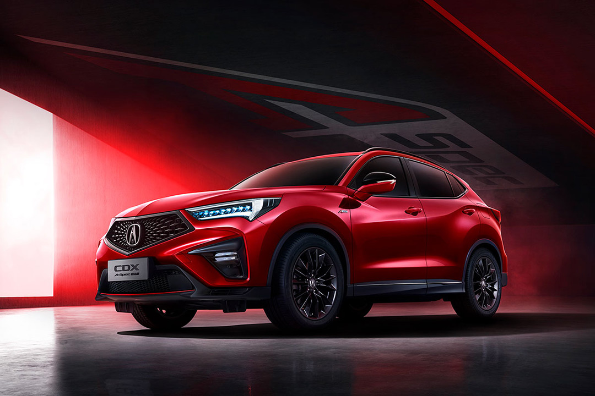
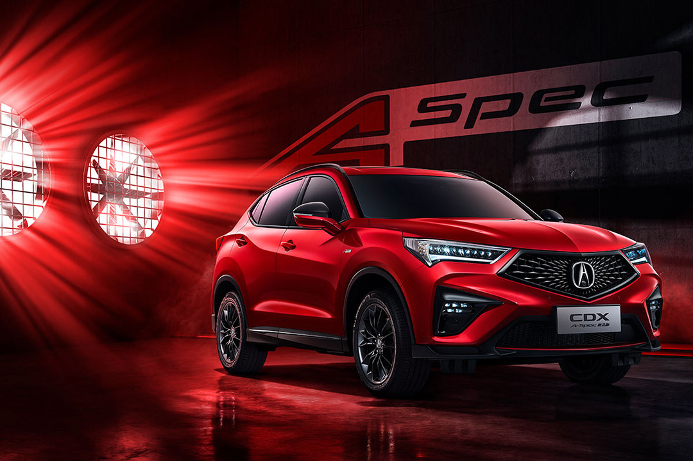
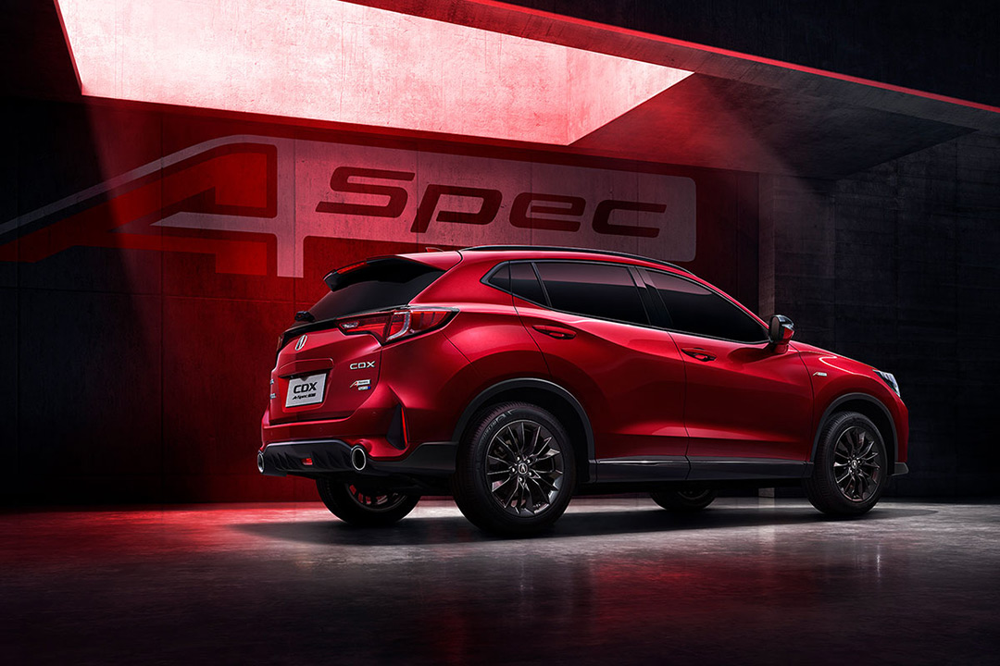
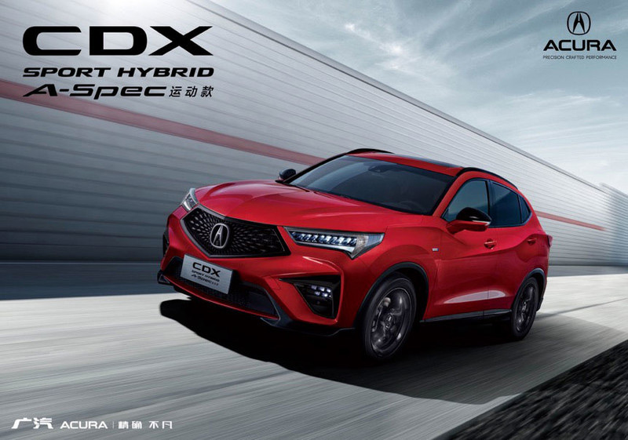
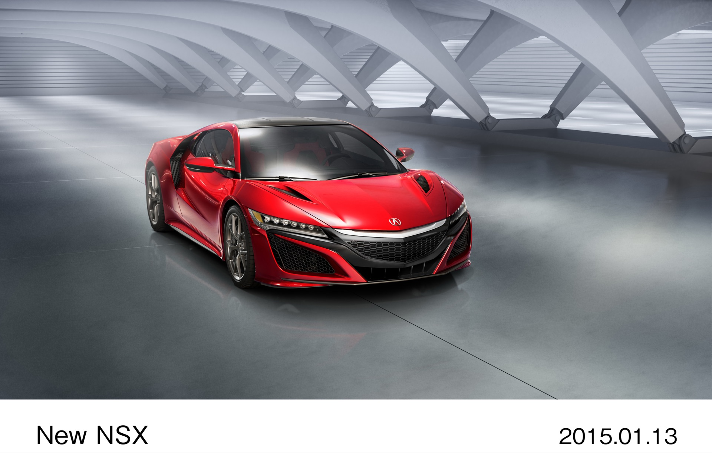
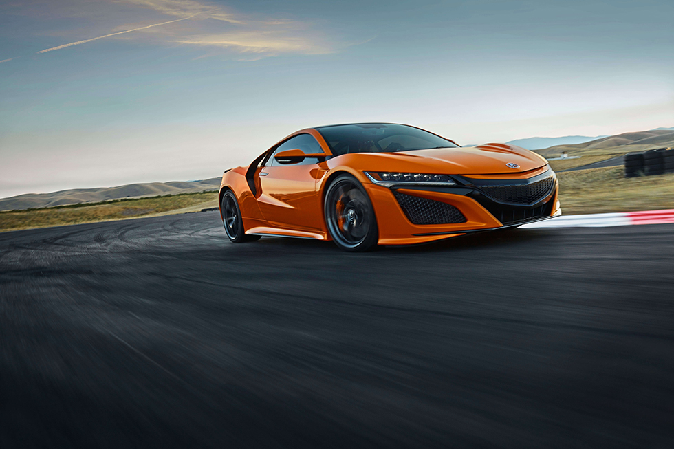

Acura China Brand Repositioning
+53% Awareness | +76% Brand Affinity | 2 Competitive Pitches Won

Led the creative strategy that transformed Acura from a niche, utilitarian Japanese import into an approachable luxury brand for Chinese consumers — driving +53% awareness and +76% brand affinity in one year.
Role: Associate Creative Director — Creative strategy, campaign execution, Japanese-to-Chinese brand localization
Client: Acura China / Honda China
Agency: Dentsu ONE Beijing
Duration: Apr 2015 – May 2016
Category: Brand Strategy / Cross-cultural Localization
"Acura didn't need to be more premium. It needed to be more human."
+53%
Consumer Awareness YOY
+76%
Brand Affinity YOY
16,348
Units in 2017 (+100.8% YOY, Historic Best)
2 Pitch Wins
CDX Launch + Annual Brand Campaign

"No luxury brand in China felt genuinely approachable. Every brand talked at consumers. None talked with them."
By 2015, Acura had been in China for nearly a decade — and almost no one cared. Annual sales: ~5,000 units in a market selling 20+ million cars per year.
Three Compounding Challenges:
• Lost in Translation — "Precision Crafted Performance" resonated in America but landed flat in China. Japanese cars = reliability, not luxury
• Perception Death Sentence — Consumers saw Acura as "niche" and "utilitarian." They respected the product but felt nothing for the brand
• Ticking Clock — Honda was about to produce Acura locally (CDX, mid-2016). The brand needed emotional repositioning before the launch, not after
72 Dealerships Nationwide
~5,000 Annual Sales
"Niche & Utilitarian" Perception
vs. BMW, Mercedes, Lexus
The core insight was counterintuitive: every luxury competitor in China was racing toward prestige. The market was saturated with "I'm better than you" messaging.
The Repositioning:
• Engineering-first → Lifestyle-first
• "We are technically superior" → "We understand your life"
• Niche & exclusive tone → Warm & confident tone
• Japanese heritage emphasis → China-relevant emotional territory
Two Pitch Wins, One Story:
Won both the CDX launch campaign and the annual brand repositioning — owning the complete Acura narrative in China.

"THE WAY I AM — 唯自己 可追随"
(Only Yourself Worth Following)
Acura's first China-produced vehicle: compact luxury SUV at ¥229,800–309,800. Launched July 29, 2016 at Shanghai Tower — China's tallest building.
Neon installations lit up Wangfujing, Beijing's busiest commercial district — turning a brand message into a physical landmark.
Awards: Sharp Technology Award + Best Exterior Design Award, China Auto Media Awards 2016

"You can't localize a brand by translating its tagline. You have to translate its emotional logic."
As Associate Creative Director at Dentsu ONE Beijing, I led the creative strategy for Acura's brand repositioning in China during a pivotal moment — the year before Honda's first locally-produced Acura vehicle would launch. The challenge was transforming a brand perceived as "niche and utilitarian" into one that felt emotionally relevant to Chinese luxury consumers, without the budget or heritage advantages of BMW, Mercedes, or Lexus. By shifting the creative strategy from engineering-first messaging to lifestyle-first storytelling, and by reframing Acura's underdog position as authentic approachability, the campaign drove a 53% YOY increase in consumer awareness and a 76% increase in brand affinity — fundamentally changing how Chinese consumers felt about the brand ahead of the critical CDX launch.


China luxury automotive market analysis. Consumer perception audit — understanding why "precision" failed to resonate. Competitive messaging landscape: Lexus, BMW, Mercedes.
Chinese luxury consumers were tired of being talked down to. They wanted a brand that felt like a peer, not a lecture. Acura's "underdog" position was an asset — it could be genuine when everyone else was performing.
Two separate pitch wins requiring distinct but connected strategies. Annual brand campaign set the emotional stage; CDX launch creative capitalized on it.
Japanese-to-Chinese brand adaptation — not just language, but cultural emotional codes. Translating what "luxury" means in Japan (understated) into what it needs to mean in China (confident, relatable).
"Great creative strategy can change perception, but it cannot substitute for product-market fit."
• Reframing weakness as strength: Acura's low awareness was permission to define something new. No baggage, unlike BMW or Mercedes
• Human over premium: Being the brand that whispered "I understand you" was genuinely distinctive. The +76% affinity increase proved it
• Two wins, one story: Winning both the brand annual and CDX launch meant a coherent creative ecosystem
"Repositioning ≠ Rebranding. Acura didn't need a new logo. It needed a new emotional position."
The product was always good. The gap was between what the product delivered and what the brand communicated. Our job was to close that gap with creativity, not with more engineering claims.
Historical note: Acura exited China in 2023. The 2015–2016 repositioning was the brand's strongest growth period. The lesson: when the story is true, +53% awareness gains happen. When the product stops earning the story, no amount of creativity can save it.
Interested in working together?
Contact Me